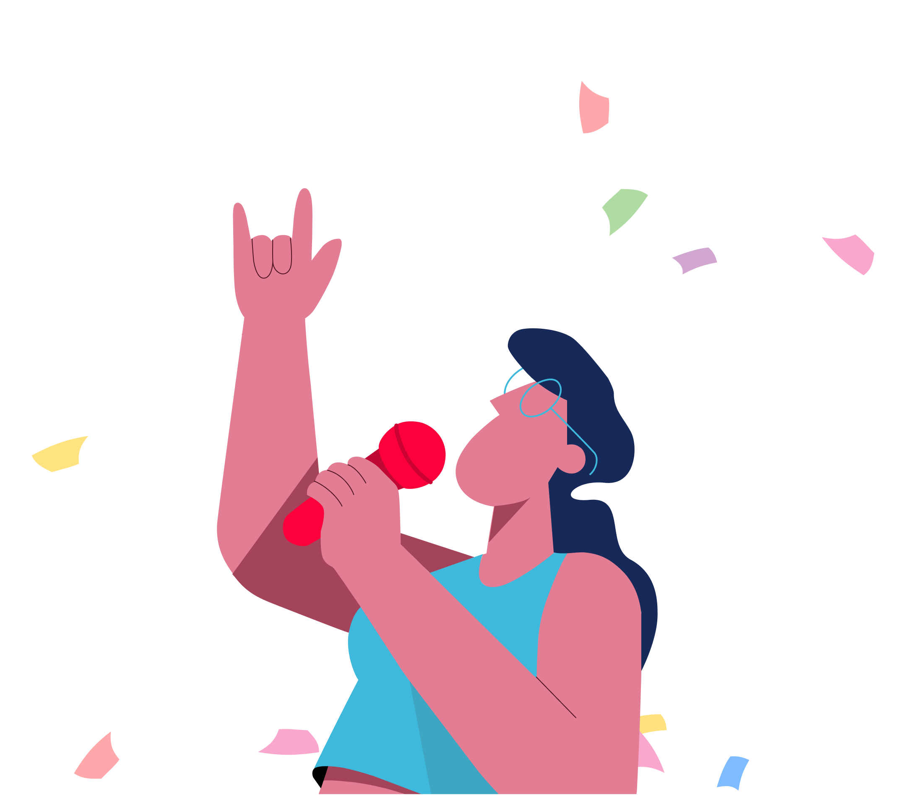
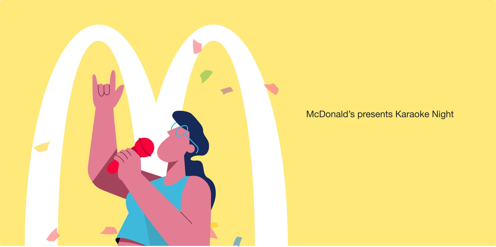

<div class="view">
<div class="template-inner template-inner--case-study" style='background-color:#fff'>

    <div class="case-study-wrapper">
        <div class='text-center case-study-section case-study-section--hero' style='background-color:#fce972'>
            <div class="case-btn-back-wrapper">
                <a href='/eric-portfolio/page/case-studies' id="case-study-back" class="btn btn-link">
                    
                </a>
            </div>
            <div class="case-study__content">
                <h1>McDonald’s presents Karaoke Night</h1>
                <p>Visual Design, Content Strategy, Digital Marketing.</p>
            </div>
            <div class="img-wrap  case-hero__picture case-study-inner-content">
                <picture class="img-full ">
                    <source 
                        media="(max-width: 768px)" 
                        srcset="../../assets/images/M_McDonalds-Hero.png"
                    />
                    
                </picture>
            </div>
        </div>
        <!-- end section -->
        <div class="case-study-section">
            <div class="case-study-inner-content">
                <h2 class="text-center">Project overview</h2>
                <p class="">This marked the launch of McDonald's renowned Karaoke Campaign, an innovative marketing initiative that aimed to foster community engagement and create an entertaining, family-friendly experience. McDonald's introduced Karaoke Night at select locations, which encouraged customers to participate in live karaoke sessions while enjoying their favorite McDonald's meals. To promote the campaign, the company aired promotional commercials, leveraged social media platforms, and implemented banner advertisements to spread awareness. This lighthearted campaign sought to underline McDonald's positioning as not just a fast-food chain, but also a place for fun and connection.</p>
                <picture>
                    <source 
                        media="(max-width: 768px)" 
                        srcset="../../assets/images/M_McDonalds-Outdoor.png"
                    />
                    
                </picture>
            </div>
            <div class="case-study-inner-content">
                <h2 class="text-center">The process</h2>
                <p class="">I was contracted to create a McDonald’s Karaoke Campaign designed to deliver a fun, engaging experience for customers 
                by transforming select locations into karaoke-friendly venues with microphones, sound systems, and digital song catalogs. Targeting families, young adults, and social groups, the campaign aimed to foster community connections through TV commercials, social media ad promotion, and in-store/out door banners, while offering incentives like discounts and free menu items to participants. Local artists and influencers hosted karaoke nights, enhancing the atmosphere and drawing larger crowds, ensuring the campaign’s success through a blend of entertainment, marketing, and customer engagement.</p>
                <picture>
                    <source 
                        media="(max-width: 768px)" 
                        srcset="../../assets/images/M_McDonalds-Banners.png"
                    />
                    
                </picture>
            </div>
            <div class="case-study-inner-content">
                <h2 class="text-center">Results & impact</h2>
                <p class="">The Karaoke Campaign delivered impressive results, with participating locations experiencing a 7%-12% increase in foot traffic and a 3%-8% boost in revenue. It successfully attracted families and younger audiences, enhancing their experience at McDonald’s. Social media played a key role, generating thousands of posts and videos that boosted McDonald’s brand image as fun and community-focused. Due to its success, the concept was adapted for international markets, customized to fit local cultures and music preferences. Ultimately, the campaign strengthened McDonald’s reputation as a creative, customer-focused brand while driving both engagement and sales. </p>
            </div>
        </div>
        <!-- end section -->
    </div>
</div>
</div>